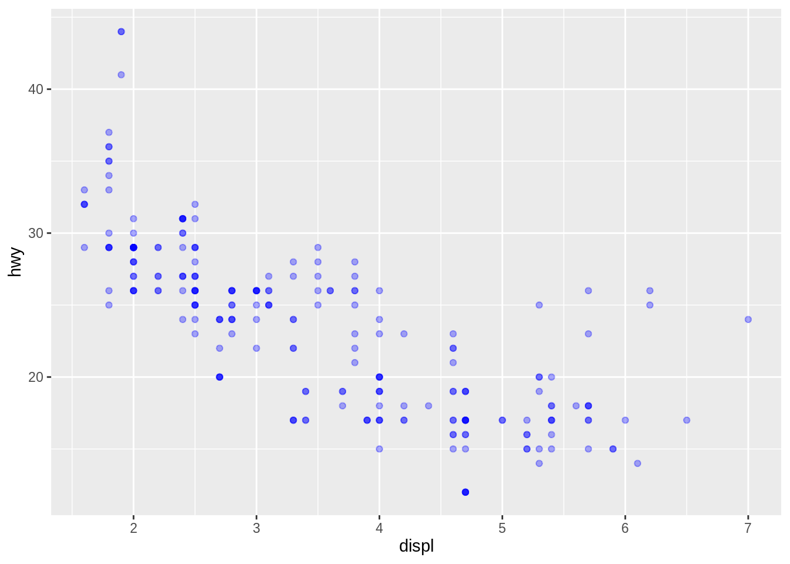
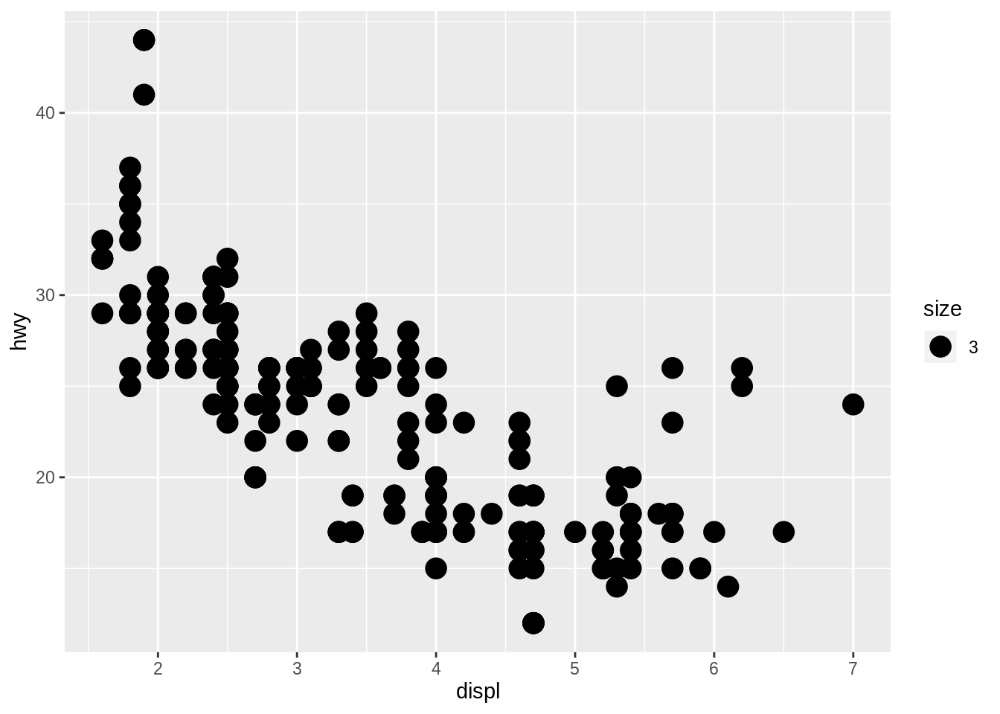
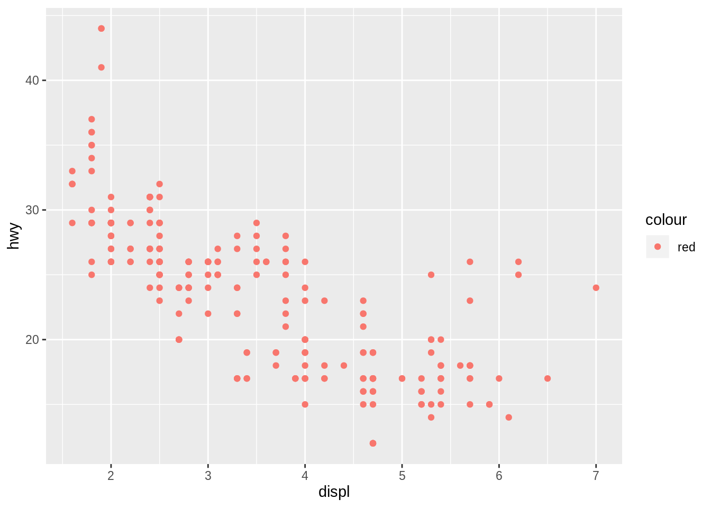

Manual aesthetics
Kirill Müller, cynkra GmbH
Blue transparent points
Plot hwy vs. displ with approx. 1/3 opacity for each point, in blue.
Hint: Use quotes " for the color.
ggplot(_____) +
geom_point(
mapping = aes(_____),
alpha = ___,
color = "___"
)► Solution:
ggplot(data = mpg) +
geom_point(
mapping = aes(x = displ, y = hwy),
alpha = 1 / 3,
color = "blue"
)
Some appear darker due to overplotting.Assigning variable outside aes()
What happens if you assign a variable, e.g. year, to an aesthetic outside the aes() call?
ggplot(_____) +
geom_point(
mapping = aes(_____),
color = year
)► Solution:
Fails with an error:
ggplot(data = mpg) +
geom_point(
mapping = aes(x = displ, y = hwy),
color = year
)## Error in layer(data = data, mapping = mapping, stat = stat, geom = GeomPoint, : object 'year' not foundThe error message is fairly confusing in some cases:
ggplot(data = mpg) +
geom_point(
mapping = aes(x = displ, y = hwy),
color = class
)## Error in rep(value[[k]], length.out = n): attempt to replicate an object of type 'builtin'
Assigning constant inside aes()
What happens if you assign a constant, e.g. 3, to the “size” aesthetic inside the aes() call?
ggplot(_____) +
geom_point(
mapping = aes(_____, size = 3)
)► Solution:
This works, but creates a useless legend and may give unexpected results. Same for color, shape, and other aesthetics:
ggplot(data = mpg) +
geom_point(
mapping = aes(x = displ, y = hwy, size = 3)
)
ggplot(data = mpg) +
geom_point(
mapping = aes(x = displ, y = hwy, color = "red")
)
ggplot(data = mpg) +
geom_point(
mapping = aes(x = displ, y = hwy, color = "blue")
)ggplot(data = mpg) +
geom_point(
mapping = aes(x = displ, y = hwy, shape = "triangle")
)Valid values for manual aesthetics
What values are valid for color, alpha, shape and size?
ggplot(_____) +
geom_point(
mapping = aes(_____),
___ = ___
)► Solution:
- color: basic colors, numbers
alpha: numbers between 0 and 1shape: integers from 0 to 25, negative integers seem to display a lettersize: positive numbers
Default point color
Find how to update the default point color for all scatterplots in the help for update_geom_defaults(). Does the setting persist between plots? Is it still active after restarting RStudio (Session → Restart R or Ctrl + Shift + F10, Cmd + Shift + F10 on the Mac).
Default text color
Find how to update the default color for all label texts in the help for theme(). How to set or update the theme for all subsequent plots?
ggplot(_____) +
_____ +
theme(___)Copyright © 2019 Kirill Müller. Licensed under CC BY-NC 4.0.